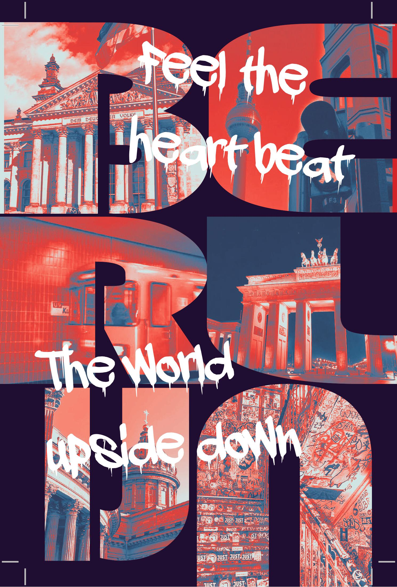

Berlijn kaartje
print design
Voor onze klasreis naar Berlijn ontwierp ik kaartjes met daarop de telefoonnummers van onze leerkrachten en het adres van ons hotel, voor het geval er iets mis zou lopen.
Ik werkte dit uit in een graffiti-stijl, omdat straatkunst sterk aanwezig is in het Berlijnse straatbeeld en perfect past bij de sfeer van de stad.

Hanne Stoop klinische spycholoog
logo design
Voor een leerkracht op mijn school ontwierp ik een logo ter voorbereiding van haar eigen praktijk als klinisch psycholoog.
Ik koos bewust voor een rustige blauwtint om vertrouwen, kalmte en veiligheid uit te stralen. De boom die uit een raam groeit staat symbool voor innerlijke groei en herstel: zelfs binnen een afgebakende ruimte kan iemand zich ontwikkelen, openbloeien en opnieuw verbinding maken met de buitenwereld.

Holy priest
poster
Ik ontwierp een poster geïnspireerd op DJ Holy Priest en zijn muziek.
De visuele sfeer is gebaseerd op de donkere, intense vibe van zijn sound, waarbij ik me volledig heb gefocust op beeld, contrast en gevoel.